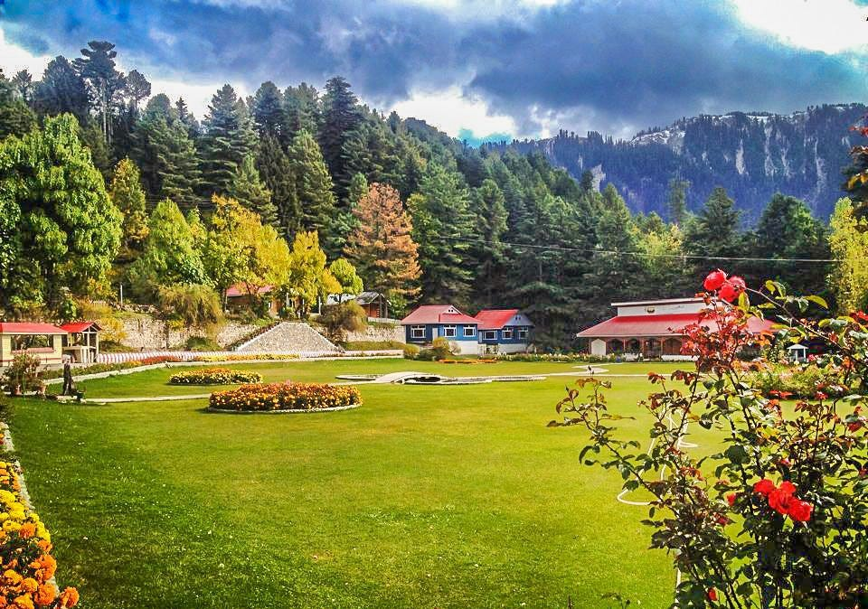
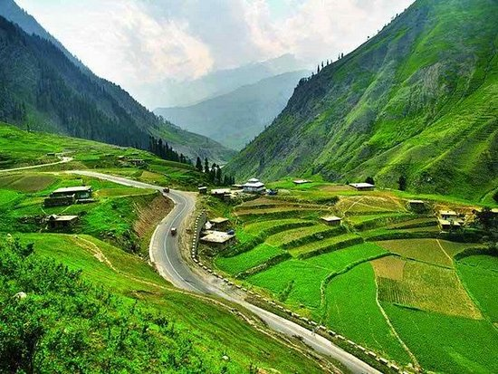

KUNHAR RIVER LOCATED
Kunhar River is in Khyber Pakhtunkhwa, Pakistan. A main source of the river is Lulusar lake, nearly 48 km from Naran Valley.

Naran Valley is in Khyber Pakhtunkhwa, Pakistan.The Kunhar River, fed by glacier melt, flows through the Naran Valley. Makra Peak, Malka Parbat,Babu Sar Top and Saiful Muluk are the main attractions.
The Kunhar flows through the entire Kaghan Valley through Jalkhand, Naran, Kaghan, Jared, Paras and Balakot, and joins the Jhelum river.
The Kunhar river trout is considered to be the best throughout the Indian subcontinent.
Kunhar River is in Khyber Pakhtunkhwa, Pakistan. A main source of the river is Lulusar lake, nearly 48 km from Naran Valley.
Malka Parbat is the highest peak in Naran Valley region in northern Pakistan. It is 17500 feet/5334m high.

Damdama is a small settlement, at 4-5 km after crossing naran and going towards batakundi. Damdama Village is a very beautiful place to visit in your summer holidays.

The hottest tourist destination for summer holidays, thousands of tourists each year came across this valley to explore its beauty and to enjoy their vacations. Mainly attractions are Shogran, Siri paya, Shogran, Kaghan, Naran, Saiful Malook Lake, Babusar Top Lulusar Lake
TOP 7 PLACES TO VISIT IN NARAN VALLEYShogran is a natural wonder and tourist destination located in Khyber Pakhtunkhwa (KP), Pakistan. The valley spans 10 kilometers wide at its widest point and has an altitude range from 7,749 feet or 2,362 metres above sea level. It is composed of snow-capped peaks, valleys, glaciers and lush meadows. Shogran is one of the most photographed locations in Pakistan due to its serene beauty and overwhelming scenic experience.
Siri paye Shogran tour is the crown jewel of Naran valley tourism. View of Makra peak from Siri paye Shogran is mesmerizing. Siri Paye Shogran tour is famous for its meadows and is a part of the Kaghan Valley, known for its stunning views and tranquility.

Kaghan valley is considered to be a jewel amongst the beautiful valleys of the Mansehra district in Pakistan. Most of the Syed family,Pathan Khan,Durrani(Jadoon)families & Mughal,Swati & Gujjer Family are settled here from their ancestors.

This place has inhabited different casts since the stone age, like Swati, Awan, Kashmiri, Durai, Mughal, and Quraish. With its rich historical background, the valley homes many ancient buildings and monuments.
The Lake Saiful Muluk is named after a legendary prince. A fairy tale called Saiful Muluk, later on turnt into poem form by the Sufi poet Mian Muhammad Bakhsh. It tells the story of the Egyptian Prince Saiful Malook who fell in love with a fairy princess named Princess Badri-ul-Jamala at the lake.

Babusar Top was originally known as Babur Top, originating from the fact that the Mughal emperor Babur passed through this area in the early 16th century. Nowadays however, it is commonly referred to as Babusar Top.

The lake is 48 kilometers away from Naran, on the Naran-Babusar road. Lulusar marks the historic place where 55 participants of the 1857 war of independence were arrested.